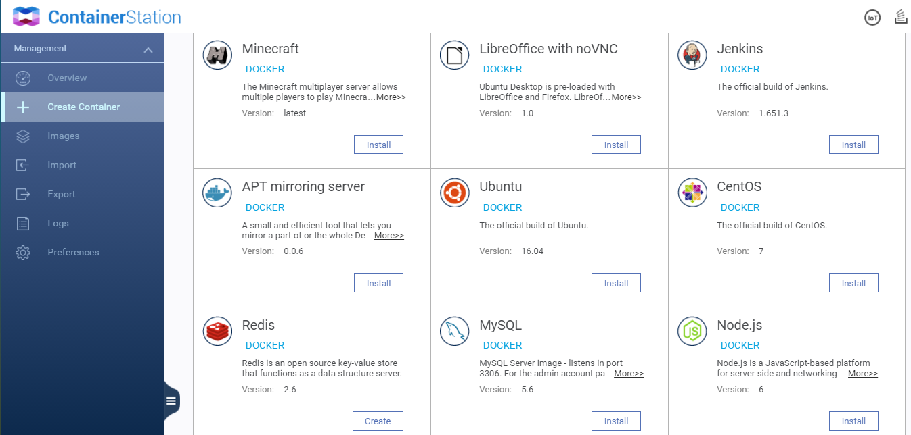
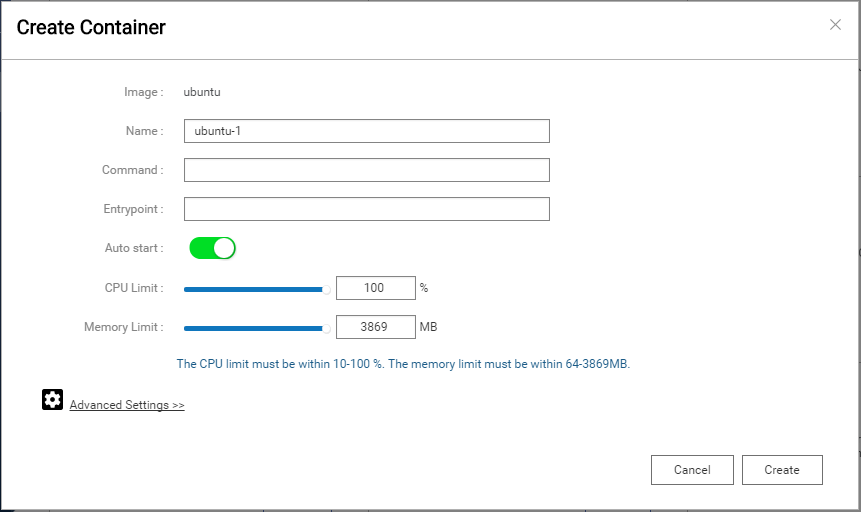
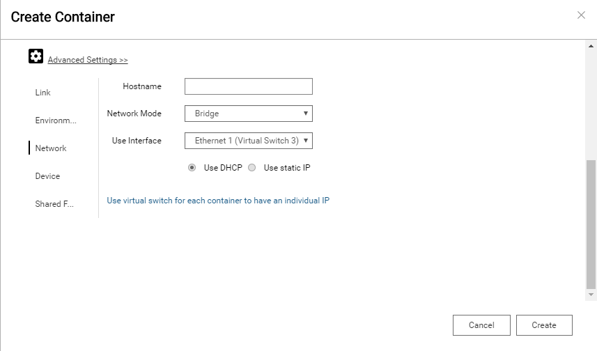
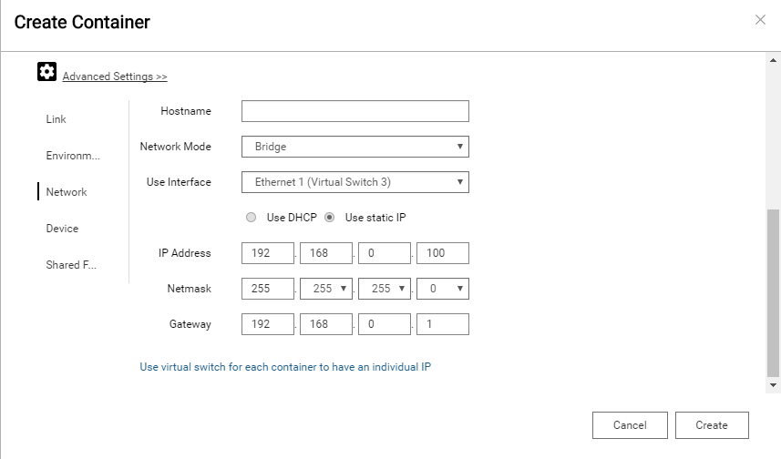

Qnet¶
Qnet provide a method for getting the same subnet IP address as physical NIC. It supports on QTS 4.2.2 or later.
Create a container from UI¶
Create a container with Qnet driver in Container Station. An example of installing Ubuntu is shown below.
Install Ubuntu
First, click Create Container on the left side bar. You will see many recommended images shown in the page. To install Ubuntu, you need to scroll down your page and click Install button of Ubuntu image.
Advanced settings
It shows Create Container dialog after Container Station finished loading. Click Advanced settings in the lower left to configure Qnet.
Use DHCP
Click Network on the left side bar and select Bridge option from Network Mode field. Use DHCP is default setting. Finally, click Create in the dialog. In this situation, Ubuntu container will request an IP address from DHCP server. Therefore, Ubuntu container and NAS are in the same subnet.
Use static IP
You can configure a specific IP address manually. Click Network on the left side bar and select Bridge option from Network Mode field. When Use static IP is checked, you need to set IP Address, Netmask and Gateway as your own environment. Finally, click Create in the dialog.
Note
Container’s network interface will be added to Ethernet X (Virtual Switch) when you choose a physical NIC to use from Use Interface field.
Docker Command¶
Without UI, you can also use Docker command to create a network that belongs to Qnet driver and run a container with --net argument.
DHCP mode
Create a new network named qnet-dhcp-eth0.
$ docker network create -d qnet --ipam-driver=qnet --ipam-opt=iface=eth0 qnet-dhcp-eth0 9e3b67877569d6da0f5587c736c4981b3206c7f31bd22e7acdfe1a347e41122c
Static mode
Create a new network named qnet-static-eth0.
$ docker network create -d qnet --ipam-driver=qnet --ipam-opt=iface=eth0 \ --subnet=192.168.80.0/23 --gateway=192.168.80.254 qnet-static-eth0 85fbe06a66d82ba8109d304e1b891598d7c21e9f6c9a99a34f586250c7d8b92d
Note
Set iface=<physical NIC> to connect Docker network to physical NIC.
Check Docker network driver
$ docker network ls NETWORK ID NAME DRIVER SCOPE 878ad98c813b bridge bridge local 1de2febfecad host host local e1369e8797ad none null local 9e3b67877569 qnet-dhcp-eth0 qnet local 85fbe06a66d8 qnet-static-eth0 qnet local
Run container with Qnet DHCP mode
Run a container and connect it to qnet-dhcp-eth0 network.
$ docker run --rm -it --net=qnet-dhcp-eth0 alpine ifconfig eth0 eth0 Link encap:Ethernet HWaddr 02:42:B8:3D:2B:07 inet addr:192.168.80.118 Bcast:0.0.0.0 Mask:255.255.254.0 UP BROADCAST RUNNING MULTICAST MTU:1500 Metric:1 RX packets:1 errors:0 dropped:1 overruns:0 frame:0 TX packets:0 errors:0 dropped:0 overruns:0 carrier:0 collisions:0 txqueuelen:1000 RX bytes:60 (60.0 B) TX bytes:0 (0.0 B)
Run container with Qnet Static mode
Run a container and connect it to qnet-static-eth0 network.
$ docker run --rm -it --net=qnet-static-eth0 --ip=192.168.80.119 alpine ifconfig eth0 eth0 Link encap:Ethernet HWaddr 02:42:55:B1:84:92 inet addr:192.168.80.119 Bcast:0.0.0.0 Mask:255.255.254.0 UP BROADCAST RUNNING MULTICAST MTU:1500 Metric:1 RX packets:9 errors:0 dropped:4 overruns:0 frame:0 TX packets:0 errors:0 dropped:0 overruns:0 carrier:0 collisions:0 txqueuelen:1000 RX bytes:940 (940.0 B) TX bytes:0 (0.0 B)
Docker Compose¶
There is another way to create a container with Qnet driver.
Write docker-compose.yml
Specify qnet driver for this network.
$ cat docker-compose.yml version: '2' services: qnet_dhcp: image: alpine command: ifconfig eth0 networks: - qnet-dhcp qnet_static: image: alpine command: ifconfig eth0 networks: qnet-static: ipv4_address: 192.168.80.119 networks: qnet-dhcp: driver: qnet ipam: driver: qnet options: iface: "eth0" qnet-static: driver: qnet ipam: driver: qnet options: iface: "eth0" config: - subnet: 192.168.80.0/23 gateway: 192.168.80.254
Run docker-compose up
It will create network and container automatically when using docker-compose up command.
$ docker-compose up Creating network "root_qnet-dhcp" with driver "qnet" Creating network "root_qnet-static" with driver "qnet" Starting root_qnet_dhcp_1 Creating root_qnet_static_1 Attaching to root_qnet_dhcp_1, root_qnet_static_1 qnet_dhcp_1 | eth0 Link encap:Ethernet HWaddr 02:42:80:EF:D6:BD qnet_dhcp_1 | inet addr:192.168.80.118 Bcast:0.0.0.0 Mask:255.255.254.0 qnet_dhcp_1 | UP BROADCAST MULTICAST MTU:1500 Metric:1 qnet_dhcp_1 | RX packets:2 errors:0 dropped:1 overruns:0 frame:0 qnet_dhcp_1 | TX packets:0 errors:0 dropped:0 overruns:0 carrier:0 qnet_dhcp_1 | collisions:0 txqueuelen:1000 qnet_dhcp_1 | RX bytes:374 (374.0 B) TX bytes:0 (0.0 B) qnet_dhcp_1 | qnet_static_1 | eth0 Link encap:Ethernet HWaddr 02:42:87:99:2C:87 qnet_static_1 | inet addr:192.168.80.119 Bcast:0.0.0.0 Mask:255.255.254.0 qnet_static_1 | UP BROADCAST RUNNING MULTICAST MTU:1500 Metric:1 qnet_static_1 | RX packets:0 errors:0 dropped:0 overruns:0 frame:0 qnet_static_1 | TX packets:0 errors:0 dropped:0 overruns:0 carrier:0 qnet_static_1 | collisions:0 txqueuelen:1000 qnet_static_1 | RX bytes:0 (0.0 B) TX bytes:0 (0.0 B) qnet_static_1 | root_qnet_dhcp_1 exited with code 0 root_qnet_static_1 exited with code 0
Check Docker network driver
$ docker network ls NETWORK ID NAME DRIVER SCOPE 878ad98c813b bridge bridge local 1de2febfecad host host local e1369e8797ad none null local 1229f940eeb1 root_qnet-dhcp qnet local 03940e9bd2a4 root_qnet-static qnet local